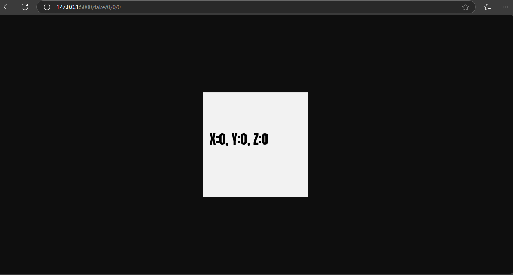
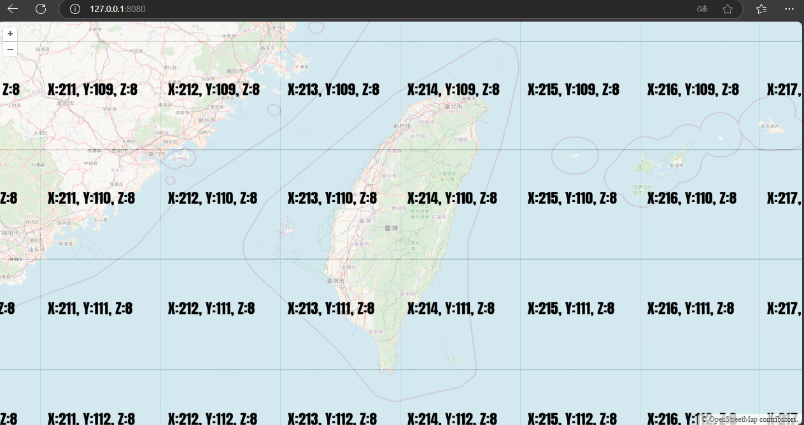

簡介
在地理資訊系統(Geographic Information System, GIS)中，Tile是將一張圖切成很多塊正方形的圖片，而將這些圖片以圖磚的方式展示在地圖中。
有時候想要在地圖中的某個區塊確認它的XYZ資訊，所以在Docker環境中開發了一個偽造的XYZ圖磚伺服器。
功能介紹
- 透過canvas產生圖片
圖磚產生
透過OpenLayer預覽圖磚
Demo on YouTube
技術使用:
- Docker
- Node.js
- OpenLayer
- Vite

在地理資訊系統(Geographic Information System, GIS)中，Tile是將一張圖切成很多塊正方形的圖片，而將這些圖片以圖磚的方式展示在地圖中。
有時候想要在地圖中的某個區塊確認它的XYZ資訊，所以在Docker環境中開發了一個偽造的XYZ圖磚伺服器。